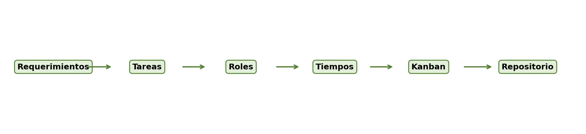

🗂️ De la idea al plan: organiza para no improvisar
Ya tienes el problema, los usuarios objetivo, los objetivos, los requerimientos, el alcance y los entregables de tu proyecto web 🎉. Ahora toca organizar cómo lo van a construir: quién hace qué, cuándo, con qué herramientas y cómo van a controlar el avance. Esta parte no se puede dejar para el final.
En el desarrollo de software, muchas dificultades no aparecen por falta de conocimientos técnicos, sino por ausencia de planificación. Cuando no hay claridad sobre quién hace cada tarea, cuándo debe entregarse, qué archivos se modificaron o en qué estado va el proyecto, el equipo duplica esfuerzos, pierde información, se retrasa o entra en conflicto. 😬
En este OVA vas a trabajar tareas, roles, tiempos, hitos, cronograma, tablero Kanban y los conceptos básicos de Git y control de versiones, con actividades prácticas para que tu equipo construya su plan de trabajo.
Al finalizar, tu equipo tendrá listo un plan de trabajo con roles, cronograma, hitos, un tablero Kanban activo y un repositorio configurado 📋. Esta evidencia cierra la Unidad 1 y deja a tu equipo listo para empezar la Unidad 2, enfocada en el diseño e implementación del frontend.
✨ Un buen plan no es un documento que se escribe y se olvida: es la guía que tu equipo va a revisar semana a semana. 🚀

Objetivos de aprendizaje
- 🧠 Reconocer la importancia de la planificación en el desarrollo de un proyecto web.
- 🧩 Descomponer los requerimientos del proyecto en tareas concretas, verificables y asignables.
- 👥 Definir roles y responsabilidades dentro del equipo de trabajo, promoviendo la colaboración y la corresponsabilidad.
- 🗓️ Elaborar un cronograma básico con tareas, tiempos, hitos y responsables.
- 🗂️ Aplicar el tablero Kanban como herramienta de seguimiento del avance del proyecto.
- 🔧 Comprender el uso básico de Git y repositorios como estrategia de control de versiones y trabajo colaborativo.
🔍 Modo exploración: recorre las 5 estaciones y suma puntos
⭐ Puntos: 0
Actividades
🎮 Modo misión activado — completa las 7 misiones de tu equipo
🏅 Misiones: 0/7
🕵️ Misión 1: Cuestionario de comprensión
Responde de forma individual, clara, completa y argumentada.
📝 Producto esperado: El cuestionario respondido de forma individual por cada integrante.
🧩 Misión 2: Conversión de requerimientos en tareas
Retomen la matriz de requerimientos de la guía anterior y conviertan los requerimientos prioritarios en tareas claras y verificables.
| Requerimiento | Tareas necesarias | Evidencia esperada |
|---|
📝 Producto esperado: Tabla con al menos 5 requerimientos convertidos en tareas y evidencias.
👥 Misión 3: Asignación de roles y responsabilidades
Definan los roles de los integrantes del equipo, con responsabilidades claras y equilibradas.
| Integrante | Rol asignado | Responsabilidades principales | Evidencias que debe aportar |
|---|
📝 Producto esperado: Tabla con roles y responsabilidades de todos los integrantes.
🗓️ Misión 4: Elaboración del cronograma
Organicen sus actividades en un cronograma básico de 6 semanas.
| Semana | Tarea principal | Responsable | Producto o evidencia | Estado |
|---|
📝 Producto esperado: Cronograma con tareas, responsables y estado para 6 semanas.
🗂️ Misión 5: Creación del tablero Kanban
Creen un tablero Kanban físico o digital con las columnas: por hacer, en proceso, en revisión y hecho. Verifiquen que cumpla lo siguiente:
📝 Producto esperado: Tablero Kanban activo, físico o digital, con tareas registradas.
🔧 Misión 6: Configuración del repositorio
Creen o configuren el repositorio del proyecto y verifiquen los siguientes criterios.
| Criterio | Cumple | Observaciones |
|---|---|---|
| Repositorio creado con nombre claro. | ||
| Integrantes agregados como colaboradores. | ||
| README inicial creado. | ||
| Estructura básica de carpetas definida. | ||
| .gitignore agregado si aplica. | ||
| Primer commit realizado con mensaje claro. |
📝 Producto esperado: Repositorio configurado con README inicial y primer commit.
🎤 Misión 7: Socialización del plan de trabajo
Cada equipo presenta en máximo cinco minutos su plan de trabajo ante el docente y los compañeros.
Marquen lo que ya tienen listo para presentar:
📝 Producto esperado: Presentación realizada y ajustes registrados.
📦 Evidencia de aprendizaje: Paquete de planificación
Cada equipo debe entregar un paquete de planificación del proyecto web que incluya:
📊 Criterios de valoración de la actividad
| Criterio | Nivel esperado |
|---|---|
| Organización del plan de trabajo | El plan presenta tareas claras, tiempos realistas, responsables definidos e hitos coherentes. |
| Asignación de roles | Los roles están distribuidos de forma equilibrada y responden a las necesidades del proyecto. |
| Uso del tablero Kanban | El tablero permite visualizar el estado de las tareas y se encuentra actualizado. |
| Configuración del repositorio | El repositorio está creado, organizado y cuenta con README inicial y primer commit. |
| Coherencia con la formulación previa | Las tareas se derivan de los objetivos, requerimientos, alcance y entregables definidos anteriormente. |
| Trabajo colaborativo | El equipo evidencia participación, comunicación y corresponsabilidad en la planificación. |
Evaluación
Comprueba lo que has aprendido. Selecciona la respuesta correcta para cada pregunta.
Recursos para profundizar
Para ampliar tu conocimiento, te recomendamos explorar los siguientes recursos:
-
Inicio rápido para repositorios (GitHub Docs)
Guía oficial para crear un repositorio en GitHub y hacer tu primer cambio en unos cinco minutos.
Ir al recurso -
Tutorial completo de Kanban con Jira
Tutorial de Atlassian sobre la metodología Kanban y su aplicación en herramientas de gestión ágil.
Ir al recurso -
Commits Convencionales (especificación oficial)
Especificación oficial en español de Conventional Commits, con ejemplos de mensajes de commit bien escritos.
Ir al recurso